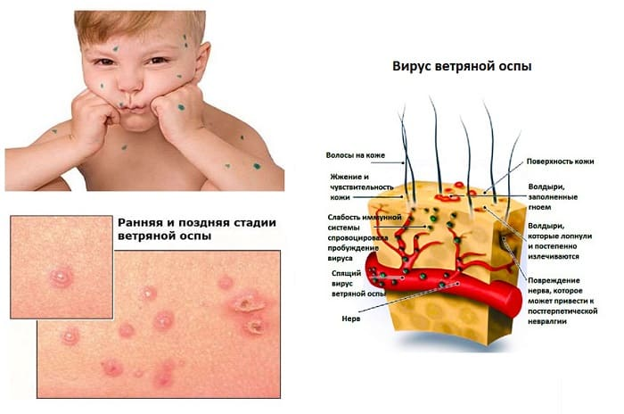
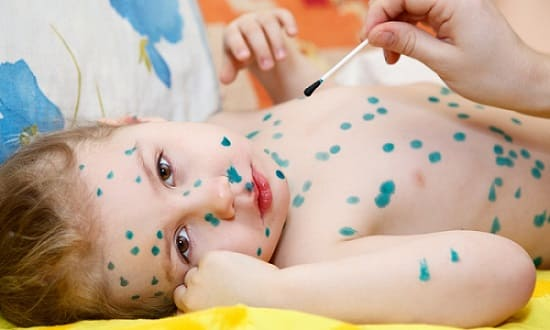

Все, что было написано ранее в отношении восприимчивости и летучести вируса кори, в равной степени относится и к ветряной оспе, которую широкие народные массы называют ласковым словом «ветрянка». Прививки от этой болезни уже разработаны, но у нас они обязательными не являются, поэтому почти все дети рано или поздно ветрянкой болеют.
Наиболее часто заражаются ребятишки до 12 лет и именно в этом возрасте (т. е. до 12 лет) болезнь почти всегда протекает легко. У детей постарше тяжесть ветряной оспы заметно увеличивается, а уж взрослые болеют исключительно тяжело. Отсюда следует довольно важный вывод о пользе посещения детских дошкольных учреждений, где весьма высока вероятность подхватить ветрянку «своевременно», дабы не маяться потом. Кстати, в некоторых весьма цивилизованных странах при возникновении ветрянки в детском коллективе никакого шума не поднимают и никаких карантинов не накладывают – чтобы все своевременно переболели.
Ветряночный вирус поражает клетки эпителия кожи, образуя на ней характерные изменения. Вначале – красные пятнышки, которые через несколько часов превращаются в пузырьки, наполненные прозрачной жидкостью. «Жизнь» пузырька недолгая: уже на второй день его содержимое мутнеет, поверхность сморщивается и начинает покрываться корочкой. Дней через 7–8 корочки подсыхают и отпадают, как правило, не оставляя следов.

Появление ветряночной сыпи обычно совпадает с ухудшением общего состояния ребенка (слабость, отказ от еды, головная боль, повышение температуры тела). Новые пузырьки обнаруживаются в течение нескольких дней (от двух до пяти).
Подавляющему большинству взрослого населения хорошо известен главный способ лечения ветряной оспы. Способ этот заключается в тщательном замазывании пузырьков прекрасным «сильнодействующим» лекарством, которое, по-видимому, по аналогии со словом «ветрянка», называется не менее ласковым словом «зеленка». И хотя ветряная оспа – болезнь легкая, вид ребенка, покрытого зелеными пятнами, весьма тяжелый, что невольно вызывает повышенную любовь и повышенное сочувствие окружающих.
Лечение ветрянки зеленкой настолько широко распространено, что некоторые молодые врачи убеждены: пятнистая сыпь зеленого цвета является характерным симптомом ветряной оспы (шутка).

Исходя из вышеизложенного, хотелось бы, тем не менее, объяснить, для чего все-таки ребенка мажут зеленкой. Так вот, больного ветряной оспой считают заразным за сутки до образования первых пузырьков и в течение пяти дней от момента появления последнего элемента сыпи. Таким образом, любящая мать каждое утро выполняет ритуал: осматривает кожу и замазывает все, ранее не замазанное. В один прекрасный день выясняется, что замазывать больше нечего. Легко заключить, что ровно через 5 дней ребенок уже ни для кого не будет представлять опасности.
В то же время логика и здравый смысл позволяют резонно предположить, что зеленка никого и ничего не лечит, а всего-навсего играет роль краски для уточнения сроков заразности больного. Но врачи знают, что через 7–8 дней после начала высыпаний (когда все пузырьки покроются корочками) ребенок опять-таки уже не заразен. И что интересно, образуются корочки вне зависимости от того, мазать зеленкой или нет.
Вывод же заключается в том, что разукрашивание ребенка зеленкой является личным делом его родителей, определяется их любовью к живописи и не имеет никакого отношения к лечению.
Что желательно знать:
• При высокой температуре тела, именно при ветряной оспе, ни в коем случае нельзя давать в качестве жаропонижающего средства аспирин (ацетилсалициловую кислоту) – высока вероятность осложнений со стороны печени. Подчеркиваю: не аспирин – плохое лекарство, а сочетание ветрянки и аспирина.
• При ветрянке ребенка часто беспокоит кожный зуд, а расчесывание пузырьков многократно увеличивает, во-первых, риск бактериального инфицирования и, во-вторых, вероятность того, что на месте пузырьков останутся следы (на всю жизнь). Для борьбы с зудом врачи назначают успокаивающие средства, а родители должны:
а отвлекать и развлекать;
б самым тщательным образом следить за ногтями (стричь, разумеется), а маленьким (т. е. совсем неразумным) надевать рукавички;
в ежедневно менять белье и, вполне возможно, организовывать ванну.
После ванны, естественно, промокать, а не вытирать. Попутно заметим, что в отношении ванн мнения врачей расходятся – американские педиатры считают их весьма желательными, отечественные – категорически против купаний. Истина, по-видимому, где-то посередине. С точки зрения автора, чем сильнее зуд и чем теплее в комнате, тем нужнее ванны.
Опять-таки, с учетом зуда, настоятельно советую всячески избегать перегрева: чем больше будет потеть – тем больше будет зудеть, что бы вы ни делали.
Е.О.Комаровский. "Здоровье ребенка"